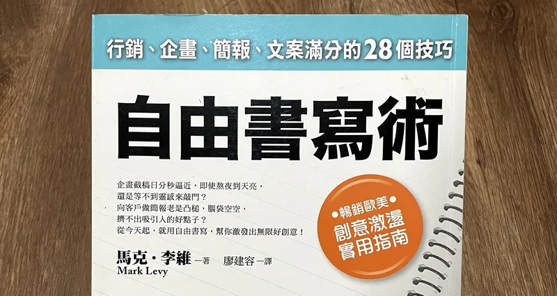
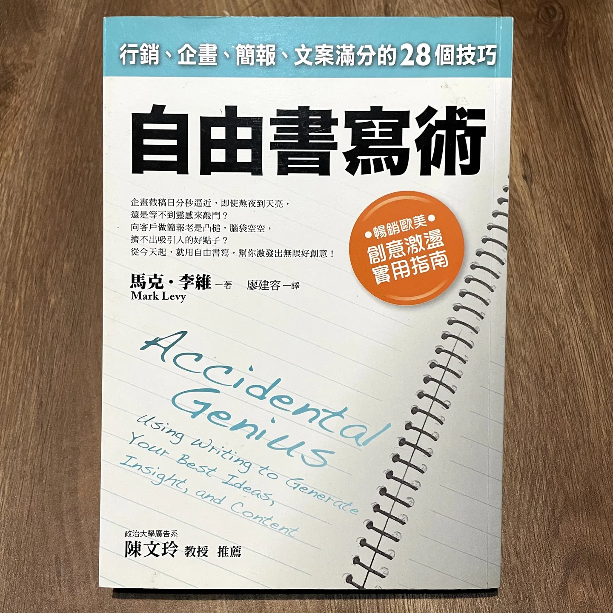

《自由書寫術》閱讀摘要

寫在前面：
年初啟動「斷捨離」大業，上架了50本書準備賣掉，也趁此催促自己看書，特別是那些買了沒看的……不過正因為抱著「親愛的，這是最後一次讀你了」的心情，閱讀的態度確實慎重不少（是好事啊）。
《自由書寫術》當年有看完、也很喜歡，確實學習了心態應用在日常書寫、但並沒有像書中那樣嚴謹執行。總之，當年沒有留下筆記，趁著他被下單的夜晚趕緊重讀，快速消化後用自己的文字紀錄，稍微隨興些，省略了許多脈絡，寫給未來想回顧的自己。

自由書寫執行要點
- 隨興地寫，用平常大腦裡的OS那種說話速度。（不要忍不住編輯！）
- 腦袋卡住時，即使是寫著那些沒有意義的字詞也沒關係，繼續寫！
- 要設下時限（如10或20分鐘），可以提升專注力、激發潛能。
- 用「思考的方式寫」，不要用「(對著別人)說話的方式寫」，因為把想法講給別人聽、讓他聽得懂，就是在對想法進行編輯啦～
- 不要緊抓著所有寫下的思緒不放，彷彿他們全都極度珍貴一樣，而是從中提煉出有價值的部分，「捨得捨棄」也很重要。
有意義的東西，就藏在那些看起來沒價值的文字背後。
自由書寫的意義
目的：整理思緒、啟發靈感、提煉點子，找出癥結點或解方。
好處：
- 書寫可以避免離題，並提供未來回溯思考路徑的線索。（單靠「用想的」來整理思緒，容易離題且回不來重點上。）
**譬如進行訪談時稍微寫下關鍵字，有助於回到重點。也有助於事後回想的紀錄，無論是原本的重點還是離題的部分。 - 聚沙成塔：想一堆點子，比想一個完美點子容易。這兩種目標的不同，會讓你的態度和策略都有所不同。
提升書寫品質的訣竅
- 基礎工法
卡關的時候，透過「問自己問題」來延續書寫。例如重新回頭檢視自己的行動、別人的看法、有沒有其他可能……。 - 善用引導句
好的引導具是簡短且沒有侷限性的，可能會因為不曾這樣思考過，而有意料外的收穫。例如：我需要練習……、假如我不必工作，我會……、最令我擔心的情況是……、天快黑了……、兩天後……。 - 詞彙解析
選定一個詞、先解釋對詞彙的了解／一般定義，自己對詞彙的看法、問問自己為什麼會這樣想、自己的見解。 - 追根究柢
碰到困擾的自己的問題或事件，卻又想不出個所以然時，感到厭倦、無聊，覺得自己被困住時，可以巨細靡遺地寫出細節、別人的反應或講的話、自己的感受等等，就有機會從中發現自己真正在意而覺得困擾的核心。 - 概念轉換
進行各種沙盤推演，天馬行空也好，例如「假使我很會寫程式……」進行反向思考，也有機會因為觀念改變，而有所突破。（書中例子是促成了典範轉移） - 故意說謊
通常會老老實實地寫下所思所想，說謊會產生什麼特殊效果呢～ - 模擬情境
設計一個假想對象跟你對話，一人飾兩角。 - 下集待續
今天寫十分鐘，明天再來看昨天寫的，接續寫十分鐘，後天再回頭看，繼續寫下去。 - 書寫馬拉松
很像是「下集待續」大法的加強版，一次性2～3小時地進行，每寫20分鐘停下來檢視自己的書寫內容，highlight幾個可以發展的句子，從而繼續書寫。覺得這是一個比較進階的書寫方式，適合已經很擅長自由書寫的人（知道如何用上述的各種方式去思考），用於想對一個較大、深的問題進行通盤思考時。 - 在閱讀中應用
找一本想看的書（書中是教你閱讀商管類的書），讀到一半想書寫就書寫，豪邁地在書上畫重點做筆記，寫下你的疑問、想到的事情與心得等等。 - 寫信分享
擷取一些在自由書寫中的重要段落，以寫信的形式分享給一個信任的親友，也請他給你回饋。分享給他人可以再次整理思緒，對方的回饋也可以給你不一樣的收穫。 - 保持好奇心
留心日常，身邊的事物都是創作的靈感來源。
「我發現，假如我想要寫書，我就必須專注於寫書有關的活動，包括閱讀、文法、採訪技巧等等。假如我想要成為一個業務員，我就必須專注於與銷售有關的活動，諸如尋找新客戶、贏得客戶的喜愛、保持密切的往來等等。我所需要的技巧，並不會在我睡覺的時候從天上掉下來，我必須專注在這些事物上。」－[秘訣二十一]你專注什麼就成為什麼 p178
【請開始自由書寫】
列出你認為卓越人生的必要條件有哪些，且把具體與抽象的條件都包括在內。請從這些清單中找出至少一項，並在接下來的三個小時內採取對策，加以實行。
留言
電子郵件不會公開，只用來辨識留言者。第一次留言會先經過審核，之後同一個電子郵件的留言會直接顯示。本留言區以 Cloudflare Turnstile 防止垃圾留言。